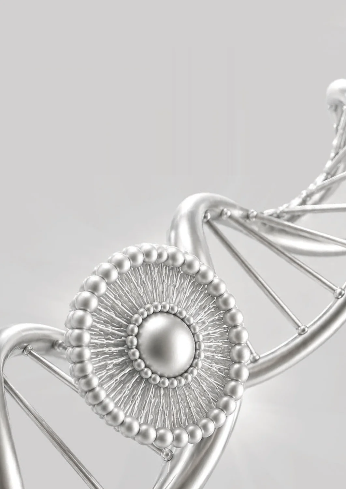
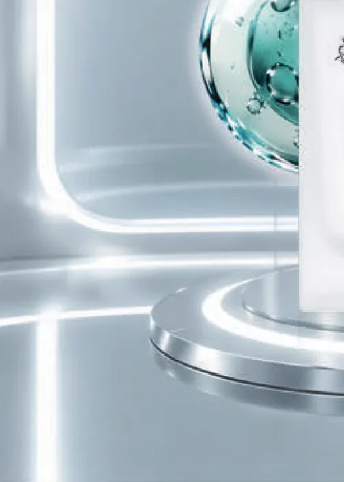
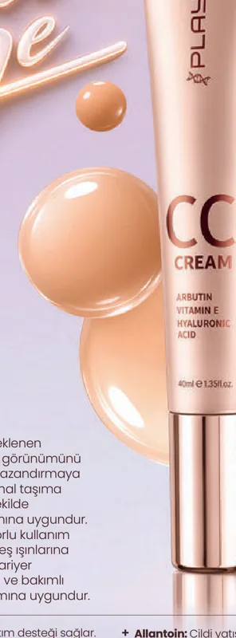
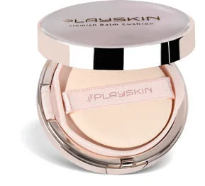

PLAYSKIN LABORATUVARLARININ DOĞUŞU
Her şey bir soruyla başladı: cilt bakımında neden hâlâ yüzeysel çözümlerle yetiniyoruz?
YENİ ÜRÜNLER
Playskin'de Yeni
Kaydırdıkça keşfet

01 · 30 MLNAD+ Peptide Serum
Kore'de üretilen ileri teknoloji formülü; NAD+, peptit kompleksi ve bariyer destekleyici aktifler.
Daha fazla bilgi 02 · 50 ML
02 · 50 MLNAD+ Peptide Cream
Hücresel gençlik ve lifting etkili yoğun bakım kremi.
Daha fazla bilgi
03 · SPF 40CC Cream
Lipozom teknolojisiyle cilt tonunu eşitlemeye ve daha aydınlık bir görünüme yardımcı olur.
Daha fazla bilgi
04 · SPF 50+Glow Cushion BB
Glow Cushion Blemish Balm. SPF 50+ PA++++ korumalı, Kore'de formüle edilmiştir.
Daha fazla bilgi 05 · ONARIM
05 · ONARIMDerma Calm Recovery Cream
Lazer ve benzeri uygulamalar sonrasında hassaslaşan cildi yatıştırmaya yardımcı olur.
Daha fazla bilgi
Tüm ürünler
Kabin ve Ev Devam ürünleriLİPOZOM TEKNOLOJİSİ
Aktif içerikleri derinlere taşıyan akıllı sistem.
Modern tıpta, özellikle onkolojide kullanılan lipozom teknolojisi; aktif maddeleri hücresel seviyede, hedefli ve kontrollü şekilde taşır. PLAYSKIN bu taşıyıcı sistemi estetik dermatolojiye uyarladı.
Laboratuvarımız
Hedefe Yönelik Cilt Çözümleri
05 ÇÖZÜM